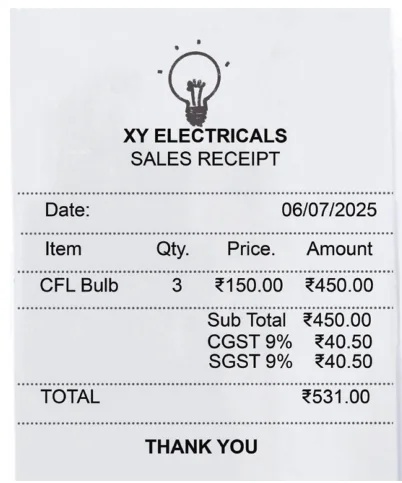

Tax rates, like the GST (Goods and Services Tax) rate or the Income Tax rates, are also specified as percentages. You may have noticed GST mentioned as part of bills. This means that the tax is part of the amount we pay and this amount goes to the government.

Check if the calculations are correct in the bill shown.
You may share any bills you have at home with the class. Observe the different elements present in the bills. Are there any similarities or differences in these bills?